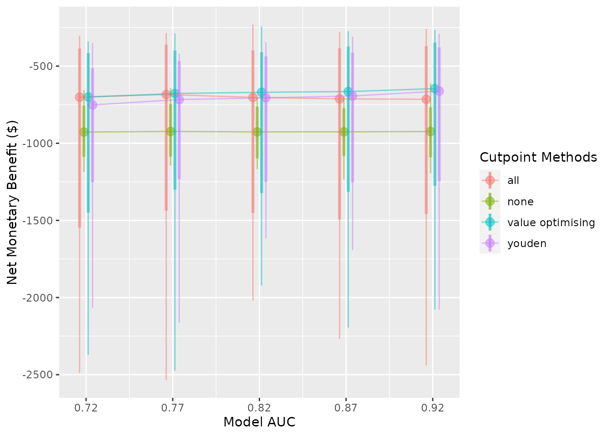

library(predictNMB)
library(parallel)Detailed example
Economic analyses often combine information from a variety of sources, including randomised controlled trials, costing studies, and local data. An advantage of simulation is that it can estimate the utility of a proposed intervention prior to implementation.
In this example, we simulate the decision process for an analyst at a hospital with a high rate of pressure injuries (or bedsores), also known as pressure ulcers. Pressure ulcers are considered significant adverse events for patients, often leading to additional discomfort, prolonged length of hospital stay, and increased costs. The hospital currently uses pressure ulcer prevention interventions routinely, but our analyst is examining whether to implement a new clinical prediction model to identify patients who may not benefit from existing interventions and provide decision support to reduce non-beneficial care.
Let’s begin by generating some realistic costs and probabilities. Keep in mind, we are trying to avoid a negative event, so the net monetary benefit of every strategy in this scenario is going to be negative. In this case, negative values will represent costs, we aim to maximise these values (reduce costs). If we were also interested in improving quality of life, we could estimate quality-adjusted life years (QALYs), multiply them by a willingness-to-pay threshold (WTP), and add this gain or loss to our true positive and false negative estimates to signify the impact on the patient. For simplicity, let’s say we’re only interested in hospital costs.
Model inputs:
- Mean incremental cost per pressure injury: $9,324 (SE 814), adapted from a study of Australian public hospitals and updated to 2021 AUD (Nguyen, Chaboyer, and Whitty 2015)
- Per-patient cost of pressure ulcer prevention intervention (PUP): $161 (SE 49), taken from a 2017 study and updated to 2021 AUD (Whitty et al. 2017)
- Hazard ratio of pressure ulcer with intervention compared to non-intervention: 0.58 (log hazard ratio SE 0.43) (Chaboyer et al. 2016)
- AUC: 0.82 (Cichosz et al. 2019)
- Hypothetical hospital pressure injury incidence/event rate: 0.1 (SE 0.02)
With these inputs, we can populate our confusion matrix (2 \(\times\) 2 table), which helps us understand the outcomes resulting from correct and incorrect predictions.
Model inputs
First, we need to define our NMB function, which provides data for our simulation. In this case, the intervention is associated with a hazard ratio of 0.58 for pressure ulcer under intervention conditions compared to standard care. We can use a probability-weighted cost saving for successful prevention, at $9324*(0.58) = an improvement of around $5048. After including $161 in intervention costs, the net benefit is around $4888 for a successfully prevented pressure ulcer.
The AUC is 0.82, which represents the proportion of random positive patients that received a higher probability of an injury than random negative patients (and vice versa). A useful property of the AUC is that it is the same no matter what probability threshold we use. In our case, an AUC of 0.82 means that the model will assign higher probabilities of a pressure ulcer to around 82% of patients who go on to develop an ulcer compared to patients that don’t.
fx_nmb <- function() {
cost_of_pi <- 9324
eff_pup <- 0.58
cost_pup <- 161
c(
# True positive = Correctly predicted event savings - intervention cost
"TP" = -cost_of_pi * eff_pup - cost_pup,
# False positive: Cost of (unnecessary) treatment from incorrectly
# predicted positive
"FP" = -cost_pup,
# True negative: No cost of treatment or event from correctly
# predicted negative
"TN" = 0,
# False negative: Full cost of event from incorrectly predicted negative
"FN" = -cost_of_pi
)
}
fx_nmb()
#> TP FP TN FN
#> -5568.92 -161.00 0.00 -9324.00For a first pass, we want to see how our current values affect the estimated NMB from model implementation. We will just use our best guesses for now, but for a rigorous simulation, we will want to use Monte Carlo methods to sample from input distributions.
nmb_simulation <- do_nmb_sim(
# Evaluating a theoretical cohort of 1,000 patients
sample_size = 1000,
# The larger the number of simulations, the longer it takes to run, but the
# more reliable the results
n_sims = 500,
# Number of times the NMB is evaluated under each cutpoint
n_valid = 10000,
# The AUC of our proposed model
sim_auc = 0.82,
# The incidence of pressure ulcers at our hypothetical hospital
event_rate = 0.1,
# As a first pass, we will just use our confusion matrix vector above for
# training and evaluation
fx_nmb_training = fx_nmb,
fx_nmb_evaluation = fx_nmb
)
nmb_simulation
#> predictNMB object
#>
#> Training data sample size: 1000
#> Minimum number of events in training sample: 100
#> Evaluation data sample size: 10000
#> Number of simulations: 500
#> Simulated AUC: 0.82
#> Simulated event rate: 0.1
# Get the median incremental NMB for each threshold selection method
make_summary_table(nmb_simulation)
#> # A tibble: 8 × 3
#> method median `95% CI`
#> <chr> <dbl> <chr>
#> 1 all -702. -736.2 to -670.1
#> 2 cost minimising -666. -702.2 to -631.8
#> 3 index of union -693. -739.2 to -651.8
#> 4 none -933. -991.7 to -877.7
#> 5 prod sens spec -693. -741.4 to -651.5
#> 6 roc01 -693. -737.9 to -654.8
#> 7 value optimising -668. -708.1 to -632.9
#> 8 youden -694. -746.5 to -647.2
# Demonstrates the range of selected cutpoints under each method
plot(nmb_simulation, what = "cutpoints") 
# Compares the incremental benefit of each alternate strategy to our
# current practice (treat all)
plot(nmb_simulation, what = "inb", inb_ref_col = "all") 
Our first pass shows treating none is likely to be an undesirable option, outperformed by every other method. If we set treat none as the reference strategy, it would have an NMB of $0. Treat all looks like a pretty good choice, so we could consider making the intervention standard practice. The best option from a NMB perspective looks to be our value optimising or the cost minimising method. The first plot shows that this is actually a lower threshold than the Youden index and other equivalents, which means that we can be a bit less strict in deciding who gets the intervention. So our intervention might be worth using even for some low risk patients.
Results from the ROC-based methods like the Youden index and index of
union are also quite uncertain, so we may not want to use them for these
input parameters. However, the utility of these models and the threshold
selection methods based on the ROC might improve as they get more
accurate, or as the event rate increases; what we really want to know is
how robust our results are to changes in the input parameters. This is
the purpose of screen_simulation_inputs(). We can not only
simulate from a distribution for our cost inputs, we can pass a vector
to the AUC and incidence arguments to understand how these impact our
findings.
First, let’s specify our sampler function for the confusion matrix. We can replace our inputs with single samples from distributions. Make sure use code within the function to generate the samples so that they are resampled every simulation. This propagates the uncertainty of these distributions into the NMB values in the many simulations that we run.
fx_nmb_sampler <- function() {
cost_of_pi <- rnorm(n = 1, mean = 9234, sd = 814)
eff_pup <- exp(rnorm(n = 1, mean = log(0.58), sd = 0.43))
cost_pup <- rnorm(n = 1, mean = 161, sd = 49)
c(
"TP" = -cost_of_pi * eff_pup - cost_pup,
"FP" = -cost_pup,
"TN" = 0,
"FN" = -cost_of_pi
)
}
fx_nmb_sampler()
#> TP FP TN FN
#> -4172.1138 -253.2204 0.0000 -9176.1184
fx_nmb_sampler()
#> TP FP TN FN
#> -6124.6967 -121.8554 0.0000 -8990.9976
fx_nmb_sampler()
#> TP FP TN FN
#> -3815.4057 -169.2083 0.0000 -8135.4876The sampler function shows that we can expect some significant variation, especially due to the probability that our intervention is effective. It’s always possible that an intervention could lead to worse patient outcomes. In our case, some true positives could actually be worse than false negatives!
We should also check whether changing the other inputs can lead to
different results. Perhaps the authors of the clinical prediction model
reported a misleading AUC and when we implement the model it turns out
to be lower, or perhaps our pressure ulcer rate in some wards is
actually quite different to the average incidence at the hospital. By
replacing our sim_auc and event_rate arguments
with vectors, we can run simulations for each possible combination we
are interested in.
In the snippet below, we will compare the treat all strategy to total disinvestment from the intervention (“none”) and to a couple of alternative, model-guided strategies, using the “value_optimising” and “youden” thresholds.
We can also do this in parallel to speed things up.
cl <- makeCluster(2)
sim_pup_screen <- screen_simulation_inputs(
n_sims = 500,
n_valid = 10000,
sim_auc = seq(0.72, 0.92, 0.05),
event_rate = c(0.05, 0.1, 0.15),
cutpoint_methods = c("all", "none", "value_optimising", "youden"),
fx_nmb_training = fx_nmb,
fx_nmb_evaluation = fx_nmb_sampler,
cl = cl
)
stopCluster(cl)
make_summary_table(sim_pup_screen)
#> # A tibble: 15 × 10
#> sim_auc event_rate all_median all_9…¹ none_…² none_…³ value…⁴ value…⁵ youde…⁶
#> <dbl> <dbl> <dbl> <chr> <dbl> <chr> <dbl> <chr> <dbl>
#> 1 0.72 0.05 -428. -754.6… -461. -545.2… -394. -634.1… -398.
#> 2 0.72 0.1 -701. -1478.… -920. -1094.… -704. -1422.… -745.
#> 3 0.72 0.15 -986. -2070.… -1390. -1648.… -988. -2064.… -1091.
#> 4 0.77 0.05 -444. -790.2… -460. -547.2… -397. -641.6… -399.
#> 5 0.77 0.1 -681. -1417.… -924. -1086.… -675. -1313.… -727.
#> 6 0.77 0.15 -944. -1976.… -1377. -1637.… -943. -1914.… -1048.
#> 7 0.82 0.05 -424. -778.2… -461. -551.4… -371. -637.7… -370.
#> 8 0.82 0.1 -704. -1451.… -927. -1116.… -673. -1366.… -711.
#> 9 0.82 0.15 -967. -2003.… -1375. -1677.… -957. -1921.… -1024.
#> 10 0.87 0.05 -452. -829 t… -463. -543.5… -375. -659.8… -373.
#> 11 0.87 0.1 -717. -1428 … -930. -1087.… -678. -1333.… -700.
#> 12 0.87 0.15 -974. -2018.… -1388. -1636.… -934. -1891.… -990.
#> 13 0.92 0.05 -427. -742.4… -456. -543.7… -344. -597.1… -345.
#> 14 0.92 0.1 -712. -1450.… -922. -1094.… -646. -1324.… -662.
#> 15 0.92 0.15 -938. -2254.… -1384. -1621.… -899. -2141.… -932.
#> # … with 1 more variable: `youden_95% CI` <chr>, and abbreviated variable names
#> # ¹`all_95% CI`, ²none_median, ³`none_95% CI`, ⁴`value optimising_median`,
#> # ⁵`value optimising_95% CI`, ⁶youden_medianAs our model accuracy increases and event rate decreases, treatment decisions based on the model, like the Youden index, begin to look better. There are reasonable gains from using the prediction model, even though there is some uncertainty. If the event rates 0.05, 0.10 and 0.15 corresponded to different wards of the hospital, our simulation could represent the estimated effectiveness of different strategies in each setting.
We can also represent these results visually.
plot(
sim_pup_screen,
x_axis_var = "sim_auc",
constants = c(event_rate = 0.05),
dodge_width = 0.01
)
#>
#>
#> Varying simulation inputs, other than sim_auc, are being held constant:
#> event_rate: 0.05
plot(
sim_pup_screen,
x_axis_var = "sim_auc",
constants = c(event_rate = 0.10),
dodge_width = 0.01
)
#>
#>
#> Varying simulation inputs, other than sim_auc, are being held constant:
#> event_rate: 0.1
plot(
sim_pup_screen,
x_axis_var = "sim_auc",
constants = c(event_rate = 0.15),
dodge_width = 0.01
)
#>
#>
#> Varying simulation inputs, other than sim_auc, are being held constant:
#> event_rate: 0.15
plot(
sim_pup_screen,
x_axis_var = "event_rate",
dodge_width = 0.0075
)
#>
#>
#> Varying simulation inputs, other than event_rate, are being held constant:
#> sim_auc: 0.72
The nice thing about our cost-effectiveness function is that it tends to follow the best threshold, regardless of AUC or event rate. In this case, it tends to dynamically follow the best treatment decision as it moves across, which is why the value optimising strategy tends to overlap with the best alternative in the plots. We can also see that the Youden index begins to look better at higher accuracy and higher incidence rates, but predicting what patients will get a pressure ulcer is challenging.
Ultimately at our given AUC and event rate, the prediction model might be worth using. In the original study, Whitty and colleagues found that the prevention program was not cost-effective; however, by combining it with a prediction model, it could be worth implementing, especially in wards where the event might be rarer. (Whitty et al. 2017).